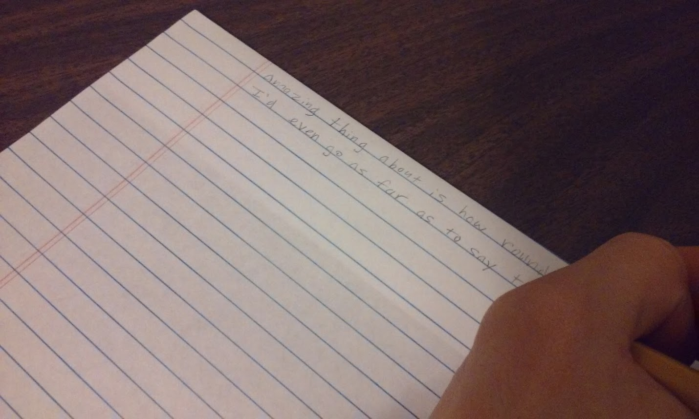

SHAREagraphs
The creative writing party game.
Posted on 1/8/2017 by Tim Rice
Status: Prototype (playtesters wanted!)
- 4-8 Players
- Ages 12+
- Playtime: 30-60 minutes
- Designer: Tim Rice
Hello readers! I am here to introduce my most recent design: SHAREagraphs. I've designed several games before this one, but this is the first one that I think is good enough to move to the blind playtesting phase. I've played it with quite a few different groups and it was a great experience every time. It works well with just about anyone that can read and write, and it allows for some real creativity as well. I'm quite proud of it, so I wanted to share it here, give a brief overview, and if you're interested in helping me test it, I've made the necessary files available below.
Game Overview
SHAREagraphs is a party game where players work together to write crazy stories. To begin, players start writing a story using a prompt from a deck of prompt cards. After a minute of writing, players pass their story to the left and continue a new story. This continues until everyone has contributed to every story. Each player gets a secret word card each round that they're trying to get other players to guess, so while contributing to each story, players will be integrating hints related to their word into their writing.
After all the stories are written, players take turns reading them aloud. As the stories are being read, players are able to write down guesses for which words they think other players have. Players score points by guessing words correctly and also by getting some (but not all) other players to guess their word.
Game Files

To play the game, the only things you'll need are lined paper, pencils, a way to time a minute (a watch, phone, or sand timer from another game will work fine), and of course the cards (included below). If you're interested in conserving paper, I included small versions of the cards as well (I used these for the version in the photos). I printed mine on two different colors of cardstock. Eventually I'll make a higher quality version of the cards, but these should be fine for testing purposes.
- Instructions: share-agraphs_instructions.pdf
- Cards: share-agraphs_cards.pdf
- Cards (Tiny Version): share-agraphs_cards_tiny.pdf
If you do play it, I would be eternally grateful if you (and anyone you played with) filled out this survey. It asks some basic questions about your experiences with the game, which will help me make it the best it can be. I'll do my best to credit you as a playtester if the game is ever published (although I believe those decisions are ultimately left up to the publisher, so I can't guarantee anything).
Finally, if you're a publisher and are interested in this game, email me at partyhatpotato@gmail.com to make my day.
Thanks for reading, and if you decide to help me test my game then I'm even more grateful. I hope you guys enjoy it.